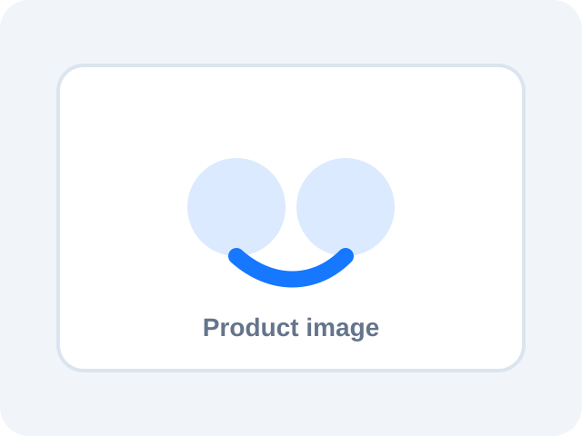

この記事でわかること
- 失敗回避で重視すべき比較軸
- iPhoneユーザーが見落としやすいAAC、空間オーディオ、Apple連携、アプリの違い
- 音質、ノイズキャンセリング、外音取り込み、通話品質、装着感、バッテリーの見方
- Amazon・楽天市場・Yahoo!ショッピングで最新価格を確認する前の注意点
結論を先に
iPhoneユーザーがイヤホン選びで後悔しやすいポイントで迷ったら、まず「どこで使うか」を決めるのが近道です。通勤ならノイズキャンセリングと外音取り込み、Web会議ならマイク性能と長時間装着、音楽重視なら音質調整、運動なら固定力と防水を優先します。
AirPods Pro 3はiPhoneとの自動切り替えや空間オーディオを重視する人に向きやすい候補ですが、価格や装着感が合わなければ満足度は下がります。実際の使用感は追記予定です。
比較表
画像はプレースホルダーです。著作権に配慮し、許諾済み画像URLを site-data.js に追加すると全ページへ反映されます。
| 商品 | 画像 | メーカー公式価格（税込） | iPhone相性 | AAC | ノイキャン | 外音取り込み | マイク/通話 | 音質 | 装着感 | 重量 | USB-C | 空間オーディオ | バッテリー | マルチポイント | 向いている人 | 購入 |
|---|---|---|---|---|---|---|---|---|---|---|---|---|---|---|---|---|
| AirPods Pro 3 |  |
¥39,800Apple公式価格 | 最有力候補 | 要公式確認 | 強め想定・要公式確認 | 自然さ重視 | 通話向き | バランス型 | カナル型。耳が痛くなりにくいかはイヤーピース・側圧・耳の形で差が出ます。 | 要公式確認 | 要公式確認 | 強い | 要公式確認 | Apple製品間の切り替え重視 | iPhoneとの自動切り替えや空間オーディオを重視する人 | |
| AirPods 4 | ¥21,800Apple公式価格。ANC搭載モデルは¥29,800 | 非常に高い | 要公式確認 | モデルにより確認 | 軽さ重視 | 日常通話向き | 軽快 | インナーイヤー。耳が痛くなりにくいかはイヤーピース・側圧・耳の形で差が出ます。 | 要公式確認 | 要公式確認 | 強い | 要公式確認 | Apple製品間の切り替え重視 | 耳をふさぐ感覚が苦手なiPhoneユーザー | ||
| AirPods Max | ¥89,800Apple公式 AirPods Max 2価格 | 非常に高い | 要公式確認 | 強め | 自然さ重視 | 安定 | 空間表現重視 | オーバーイヤー。耳が痛くなりにくいかはイヤーピース・側圧・耳の形で差が出ます。 | 要公式確認 | 要公式確認 | 強い | 要公式確認 | Apple製品間の切り替え重視 | 自宅や長距離移動で没入感を重視する人 | ||
| Sony WF-1000XM6 | ¥39,600ソニーストア価格(税込) | 高い | 要公式確認 | 強め想定・要公式確認 | 調整重視 | 要確認 | 音質重視 | カナル型。耳が痛くなりにくいかはイヤーピース・側圧・耳の形で差が出ます。 | 要公式確認 | 要公式確認 | 要アプリ・仕様確認 | 要公式確認 | マルチポイント対応状況を要確認 | AirPods以外で音質とノイキャンを重視する人 | ||
| Sony WH-1000XM6 | ¥59,400ソニーストア価格(税込) | 高い | 要公式確認 | 強め想定・要公式確認 | 調整重視 | 要確認 | 音質重視 | オーバーイヤー。耳が痛くなりにくいかはイヤーピース・側圧・耳の形で差が出ます。 | 要公式確認 | 要公式確認 | 要アプリ・仕様確認 | 長め想定・要公式確認 | マルチポイント対応状況を要確認 | 静かな環境と音質を両立したい人 | ||
| Bose QuietComfort Ultra Earbuds 2 | 公式価格確認中Bose公式ページ取得時エラーのため再確認推奨 | 高い | 要公式確認 | 強め想定・要公式確認 | 自然さ重視 | 要確認 | 迫力重視 | カナル型。耳が痛くなりにくいかはイヤーピース・側圧・耳の形で差が出ます。 | 要公式確認 | 要公式確認 | 要アプリ・仕様確認 | 要公式確認 | マルチポイント対応状況を要確認 | ノイズキャンセリングの静けさを重視する人 | ||
| Bose QuietComfort Ultra Headphones | 公式価格確認中Bose公式ページ取得時エラーのため再確認推奨 | 高い | 要公式確認 | 強め | 自然さ重視 | 要確認 | 迫力重視 | オーバーイヤー。耳が痛くなりにくいかはイヤーピース・側圧・耳の形で差が出ます。 | 要公式確認 | 要公式確認 | 要アプリ・仕様確認 | 要公式確認 | マルチポイント対応状況を要確認 | 飛行機や長距離移動で静けさがほしい人 | ||
| Sennheiser MOMENTUM True Wireless 4 | ¥47,440Sennheiser公式価格 | 高い | 要公式確認 | 十分 | 要確認 | 要確認 | 音楽重視 | カナル型。耳が痛くなりにくいかはイヤーピース・側圧・耳の形で差が出ます。 | 要公式確認 | 要公式確認 | 要アプリ・仕様確認 | 要公式確認 | マルチポイント対応状況を要確認 | 音楽の満足度を重視する人 | ||
| Technics EAH-AZ100 | 公式価格確認中Technics公式ページは確認。価格表示は取得不可 | 高い | 要公式確認 | 要確認 | 要確認 | 要確認 | 解像感重視 | カナル型。耳が痛くなりにくいかはイヤーピース・側圧・耳の形で差が出ます。 | 要公式確認 | 要公式確認 | 要アプリ・仕様確認 | 要公式確認 | マルチポイント対応状況を要確認 | 音質と通話品質のバランスを見たい人 | ||
| Anker Soundcore Liberty 4 Pro | ¥19,990Anker Japan公式価格(税込) | 十分 | 要公式確認 | 価格比で期待 | 要確認 | 要確認 | アプリ調整重視 | カナル型。耳が痛くなりにくいかはイヤーピース・側圧・耳の形で差が出ます。 | 要公式確認 | 要公式確認 | 要アプリ・仕様確認 | 要公式確認 | マルチポイント対応状況を要確認 | 価格を抑えつつ多機能な候補を探す人 |
価格比較表
価格は固定値として埋め込まず、site-data.js から表示するテンプレートです。未取得時は「価格未取得」と表示します。
| 商品 | メーカー公式価格 | Amazon | 楽天市場 | Yahoo!ショッピング | 購入 |
|---|---|---|---|---|---|
| AirPods Pro 3 | 価格未取得 | 価格未取得 | 価格未取得 | 価格未取得 | |
| AirPods 4 | 価格未取得 | 価格未取得 | 価格未取得 | 価格未取得 | |
| AirPods Max | 価格未取得 | 価格未取得 | 価格未取得 | 価格未取得 | |
| Sony WF-1000XM6 | 価格未取得 | 価格未取得 | 価格未取得 | 価格未取得 | |
| Sony WH-1000XM6 | 価格未取得 | 価格未取得 | 価格未取得 | 価格未取得 | |
| Bose QuietComfort Ultra Earbuds 2 | 価格未取得 | 価格未取得 | 価格未取得 | 価格未取得 | |
| Bose QuietComfort Ultra Headphones | 価格未取得 | 価格未取得 | 価格未取得 | 価格未取得 | |
| Sennheiser MOMENTUM True Wireless 4 | 価格未取得 | 価格未取得 | 価格未取得 | 価格未取得 | |
| Technics EAH-AZ100 | 価格未取得 | 価格未取得 | 価格未取得 | 価格未取得 | |
| Anker Soundcore Liberty 4 Pro | 価格未取得 | 価格未取得 | 価格未取得 | 価格未取得 |
iPhoneユーザーが見落としやすいポイント
iPhoneとの相性
自動接続、端末切り替え、専用アプリ、AAC、空間オーディオ、探す機能などを分けて確認します。AirPodsはApple製品との連携が強く、他社製は音質調整や価格面で選びやすい候補があります。
音質
低音の迫力だけでなく、声の聞き取りやすさ、楽器の分離感、アプリでのイコライザー調整を見ます。音楽重視の人は、長時間聴いて疲れにくいかも大切です。
ノイズキャンセリング
強さだけでなく、圧迫感、風切り音、外音取り込みへの切り替えやすさを確認します。通勤では安全確認のしやすさも満足度に直結します。
マイク・通話品質
Web会議では周囲の騒音処理、声の自然さ、片耳利用、長時間装着の疲れにくさが重要です。音質が良くても通話向きとは限りません。
装着感
耳が痛くなりにくいかはスペック表だけでは判断しにくい部分です。カナル型が苦手ならAirPods 4系、運動なら固定力のあるモデルが候補になります。
バッテリーと充電
本体の連続再生時間、ケース込み時間、急速充電、USB-C対応を確認します。通勤だけなら短めでも足りますが、出張や旅行では余裕が必要です。
購入前のチェックリスト
- AAC対応とiPhoneアプリの使いやすさを確認する
- USB-C、ケースサイズ、重量、装着感を確認する
- ノイキャンと外音取り込みの切り替えが使いやすいか見る
- Web会議が多いならマイク性能と通話品質を重視する
- ランニングなら固定力、防水、安全確認のしやすさを優先する
- 価格だけでなく保証、返品条件、販売元を確認する
メリット・デメリット
AirPods以外を選ぶメリットは、音質調整、価格、ノイキャン、装着感の選択肢が広がることです。一方で、Apple純正ほど自動切り替えや設定のわかりやすさが強くない場合があります。
AirPodsを選ぶメリットは、iPhoneとの接続、Apple製品間の切り替え、空間オーディオなどのわかりやすさです。デメリットは、価格が上がりやすく、耳の形に合わないと満足度が下がることです。
商品ごとの向き不向き
AirPods Pro 3
iPhoneとの自動切り替えや空間オーディオを重視する人に向きやすい候補です。実際の使用感は追記予定です。
おすすめな人
- iPhoneとの自動切り替えや空間オーディオを重視する人
- Apple連携重視
- commute・noise・call・beginner用途で比較したい人
おすすめしない人
- 価格を最優先したい人
- 仕様確認をせず価格だけで決めたい人
AirPods 4
耳をふさぐ感覚が苦手なiPhoneユーザーに向きやすい候補です。実際の使用感は追記予定です。
おすすめな人
- 耳をふさぐ感覚が苦手なiPhoneユーザー
- 純正の手軽さ重視
- commute・call・beginner用途で比較したい人
おすすめしない人
- 強い遮音性や密閉感を求める人
- 仕様確認をせず価格だけで決めたい人
AirPods Max
自宅や長距離移動で没入感を重視する人に向きやすい候補です。実際の使用感は追記予定です。
おすすめな人
- 自宅や長距離移動で没入感を重視する人
- Apple製品中心の人
- noise・music・headphone用途で比較したい人
おすすめしない人
- 軽さと携帯性を最優先する人
- 仕様確認をせず価格だけで決めたい人
Sony WF-1000XM6
AirPods以外で音質とノイキャンを重視する人に向きやすい候補です。実際の使用感は追記予定です。
おすすめな人
- AirPods以外で音質とノイキャンを重視する人
- 専用アプリ活用向き
- commute・noise・music用途で比較したい人
おすすめしない人
- 純正の自動連携を最優先する人
- 仕様確認をせず価格だけで決めたい人
Sony WH-1000XM6
静かな環境と音質を両立したい人に向きやすい候補です。実際の使用感は追記予定です。
おすすめな人
- 静かな環境と音質を両立したい人
- アプリ調整向き
- noise・music・headphone用途で比較したい人
おすすめしない人
- 外で身軽に使いたい人
- 仕様確認をせず価格だけで決めたい人
Bose QuietComfort Ultra Earbuds 2
ノイズキャンセリングの静けさを重視する人に向きやすい候補です。実際の使用感は追記予定です。
おすすめな人
- ノイズキャンセリングの静けさを重視する人
- 移動時の静けさ重視
- commute・noise用途で比較したい人
おすすめしない人
- 細かなApple純正連携を重視する人
- 仕様確認をせず価格だけで決めたい人
Bose QuietComfort Ultra Headphones
飛行機や長距離移動で静けさがほしい人に向きやすい候補です。実際の使用感は追記予定です。
おすすめな人
- 飛行機や長距離移動で静けさがほしい人
- 長時間移動向き
- noise・headphone用途で比較したい人
おすすめしない人
- 小さく持ち歩きたい人
- 仕様確認をせず価格だけで決めたい人
Sennheiser MOMENTUM True Wireless 4
音楽の満足度を重視する人に向きやすい候補です。実際の使用感は追記予定です。
おすすめな人
- 音楽の満足度を重視する人
- 音楽鑑賞向き
- music用途で比較したい人
おすすめしない人
- 通話と純正連携だけを重視する人
- 仕様確認をせず価格だけで決めたい人
Technics EAH-AZ100
音質と通話品質のバランスを見たい人に向きやすい候補です。実際の使用感は追記予定です。
おすすめな人
- 音質と通話品質のバランスを見たい人
- 総合バランス向き
- music・call用途で比較したい人
おすすめしない人
- 最安重視の人
- 仕様確認をせず価格だけで決めたい人
Anker Soundcore Liberty 4 Pro
価格を抑えつつ多機能な候補を探す人に向きやすい候補です。実際の使用感は追記予定です。
おすすめな人
- 価格を抑えつつ多機能な候補を探す人
- コスパ重視
- budget・commute用途で比較したい人
おすすめしない人
- Apple純正の自動連携を求める人
- 仕様確認をせず価格だけで決めたい人
よくある質問
iPhoneならAirPods一択ですか？
純正連携はAirPodsが強いですが、音質、ノイキャン、価格、装着感ではSony、Bose、Anker、Beatsなども候補になります。
AAC対応は重要ですか？
iPhoneでBluetoothイヤホンを使う場合、AAC対応は確認したい項目です。ただし対応表記だけで音質が決まるわけではありません。
価格はどこで確認すればよいですか？
メーカー公式、Amazon、楽天市場、Yahoo!ショッピングを比較し、保証と返品条件も確認してください。
画像がプレースホルダーなのはなぜですか？
著作権を侵害しないため、許諾済み画像や公式に利用可能な画像URLを後から設定する構造にしています。
まとめ
iPhoneユーザーがイヤホン選びで後悔しやすいポイントでは、価格・機能・iPhoneとの相性を分けて見ることが大切です。特に、接続安定性、AAC対応、ノイズキャンセリング、通話品質、装着感は購入後の満足度に直結します。
まずは用途を通勤、通話、音楽、運動、価格重視のどれに近いか決め、比較表で候補を2つか3つに絞ってください。最後に販売ページで価格、保証、返品条件を確認すると、買ってから後悔しにくくなります。